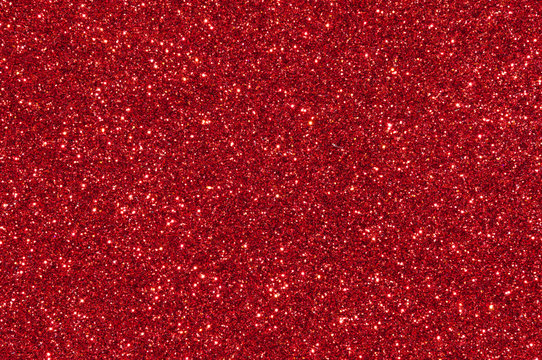
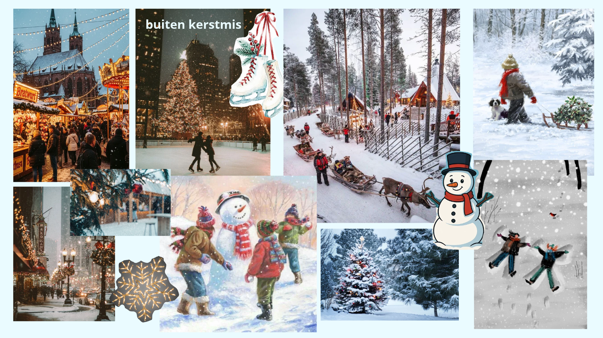
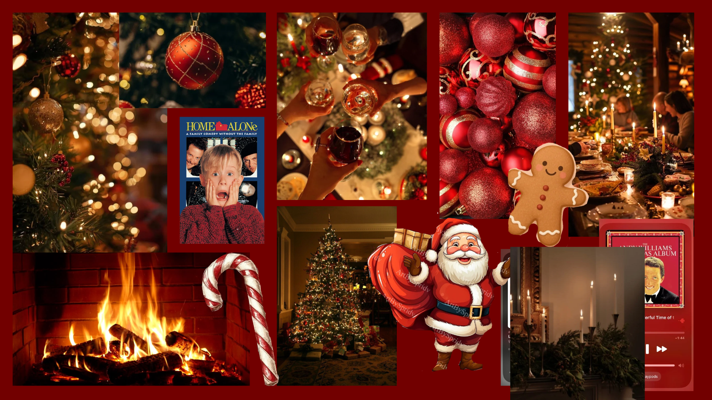
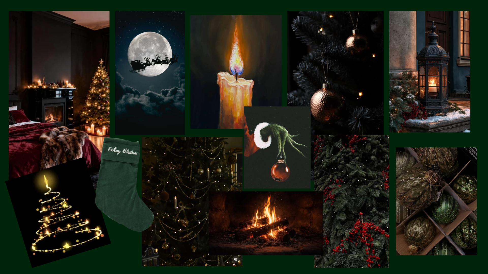
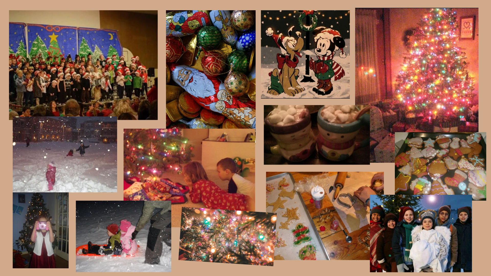
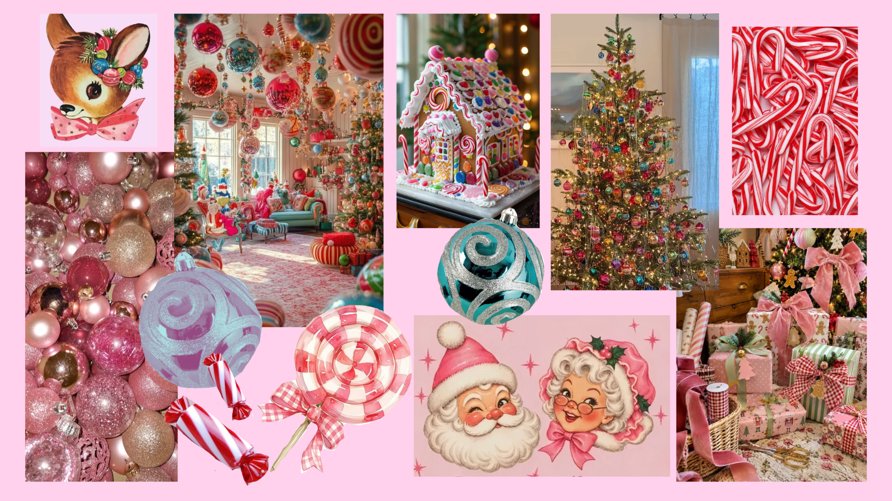

class: center, middle <!-- In deze textarea kan je in Markdown de slides aanpassen, zie https://github.com/gnab/remark/wiki voor alle mogelijkheden! --> # christmas Helena's digitale garden Onderwerp <p></p> --- # Agenda 1. Kertmis 2. 10 links 3. 50 afbeeldingen 4. Content --- # Kerstmis Ik heb kerstmis gekozen omdat het mijn favoriete feestdag van het jaar is. De warme, gezellige sfeer maakt het voor mij zo leuk. Met mijn digitale garden wil ik proberen deze nostalgische sfeer te creeren door beeld, animaties en geluid te gebruiken. --- # 10 links - bronnen verdieping verleden&nu kerst: - https://www.worldhistory.org/trans/nl/2-1893/kerst-door-de-eeuwen-heen/ - https://www.opanoma.nl/kerst-vroeger-nu/ - https://www.actiefonline.nl/nieuws/algemeen/67830/hoe-kerst-veranderde-in-de-afgelopen-50-jaar - inspiratie bronnen 5 verschillende kerst: - https://nl.pinterest.com/search/pins/?q=christmas%20dinner&rs=ac&len=9&source_id=ac_Vy3gvrin&eq=christmas&etslf=13205 - https://nl.pinterest.com/search/pins/?q=tradional%20christmas&rs=ac&len=6&source_id=ac_pDwp90oU&eq=tradio&etslf=12785 - https://nl.pinterest.com/search/pins/?q=whimsical%20christmas&rs=ac&len=18&source_id=ac_UmMEFgqF&eq=wimsical%20christmas&etslf=1280 - https://nl.pinterest.com/search/pins/?q=dark%20christmas&rs=typed - https://nl.pinterest.com/search/pins/?q=winterwonderland&rs=ac&len=14&source_id=ac_1gjWYmxr&eq=winterwonderla&etslf=8589 - https://nl.pinterest.com/search/pins/?q=nostalgic%20christmas&rs=ac&len=6&source_id=ac_uiMoJG1O&eq=nosta%3B&etslf=3493 - voorbeeld website: - https://christmastreej.github.io/?utm_source=chatgpt.com --- # Buiten kerstmis <p></p> --- # light mode kerstmis <p></p> --- # Dark mode kerstmis <p></p> --- # nostalgie kerst <p></p> --- # candy kerst <p></p> --- # Content Ik wil laten zien wat kerst voor mij zo mooi maakt. Niet alleen de versieringen en cadeautjes, maar vooral de warmte, gezelligheid, nostalgie en het samenzijn. Met eigen kerstherinneringen, foto's en persoonlijke verhalen wil ik dit proberen over te brengen. Daarnaast wil ik ook afbeeldingen, kerstmuziek, animaties en interactieve elementen gebruiken om dan het kerstgevoel te laten ervaren. Wanneer de dagen korter en kouder worden, brengt kerst warmte en gezelligheid. Door de lampjes, muziek en versierigen ontstaat er een sfeer die mensen bij elkaar brengt. <!-- Laat onderstaande staan anders breekt je presentatie -->